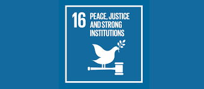

Peace, Justice and Strong Institutions
Goal 16 is about promoting peaceful and inclusive societies, providing access to justice for all and building effective, accountable and inclusive institutions at all levels. People everywhere should be free of fear from all forms of violence and feel safe as they go about their lives whatever their ethnicity, faith or sexual orientation. However, ongoing and new violent conflicts around the world are derailing the global path to peace and achievement of Goal 16. Alarmingly, the year 2022 witnessed a more than 50 per cent increase in conflict-related civilian deaths – the first since the adoption of Agenda 2030 – largely due to the war in Ukraine. In 2024, loss of lives amid armed conflicts surged 40 per cent from 2023, marking the third consecutive annual rise. About four times more children and women were killed in 2023–2024 than in the previous biennium; of these, 8 in 10 child deaths and 7 in 10 female deaths occurred in Gaza. High levels of armed violence and insecurity have a destructive impact on a country’s development, while sexual violence, crime, exploitation and torture are prevalent where there is conflict or no rule of law, and countries must take measures to protect those who are most at risk. Governments, civil society and communities need to work together to find lasting solutions to conflict and insecurity. Strengthening the rule of law and promoting human rights is key to this process, as is reducing the flow of illicit arms, combating corruption, and ensuring inclusive participation at all times. Why should I care? High levels of armed violence and insecurity have a destructive impact on a country’s development. Sexual violence, crime, exploitation and torture are prevalent where there is conflict or no rule of law. Governments, civil society and communities need to work together to find lasting solutions to conflict and insecurity. Strengthening the rule of law and promoting human rights is key to this process, as is reducing the flow of illicit arms, combating corruption, and ensuring inclusive participation at all times. How does this apply to where I live? Goal 16 aligns with the broader human rights framework by promoting societies that respect and uphold individual rights, as well as the right to privacy, freedom of expression, and access to information. Peace is a fundamental precondition for social and economic development. Without peace, societies are often plagued by conflict, violence, and instability, which can hinder progress and result in the loss of lives and resources. Equal access to justice is essential for protecting the rights of individuals, resolving disputes, and ensuring that vulnerable populations are not marginalized or mistreated. Crimes threatening peaceful societies, including homicides, trafficking and other organized crimes, as well as discriminatory laws or practices, affect all countries. What if we don’t take action? Armed violence and insecurity have a destructive impact on a country’s development, affecting economic growth and often resulting in long-standing grievances among communities. Violence also affects children’s health, development and well-being, and their ability to thrive. It causes trauma and weakens social inclusion. Lack of access to justice means that conflicts remain unresolved and people cannot obtain protection and redress. Institutions that do not function according to legitimate laws are prone to arbitrariness and abuse of power, and less capable of delivering public service to everyone. To exclude and to discriminate not only violates human rights, but also causes resentment and animosity, and could give rise to violence.